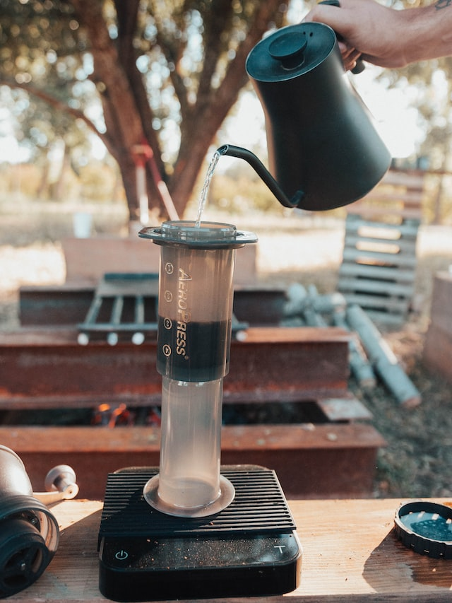

Aeropress coffee
Return to recipes

Photo by Ben
Moreland on Unsplash
Description
An Aeropress is an affordable, easy method of making good-tasting
coffee.
Ingredients
- 15g freshly ground coffee
- 250ml water, straight off the boil
Steps
- Insert the plunger into the Aeropress body and invert it, so the body opening is facing the sky
- Add the freshly ground coffee
- Add the boiled water and stir
- Start a timer for 4 minutes
- If using a paper filter, moisten it
- Attach filter and cap to the Aeropress
- Optionally, pre-heat a robust cup or mug (using hot water from the tap is fine)
- When the 4 minutes have elapsed, carefully upend the Aeropress on your cup or mug
- Push plunger down slowly until all of the water has been pushed through and you hear a hiss of air